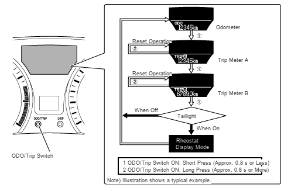

| Odometer/Trip Meter |
 Odometer Specifications Odometer Specifications
|
| Trip Meter A/B Specifications
|
| ● |
The modes are switched by pressing the odo/trip select switch located in the combination meter, and are displayed in the order odometer → trip meter A → trip meter B.
|
| ● |
When the taillights are illuminated, the display switches to rheostat display mode.
|
 |
| Odo/Trip Meter Operation
|